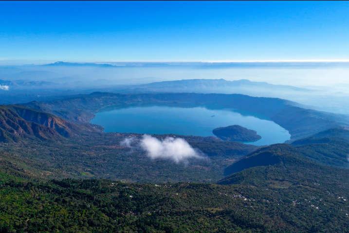
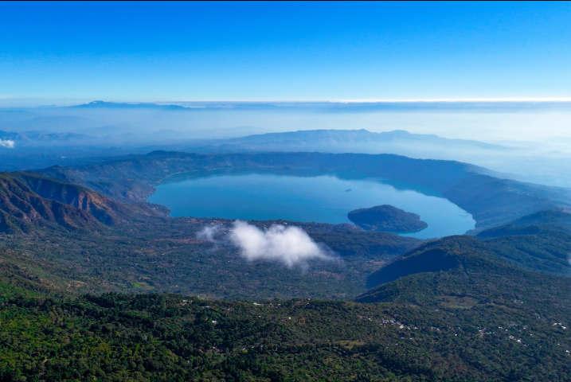

Ilamatepec Volcano & Lake Coatepeque
Volcán Ilamatepec y Lago Coatepeque
 

Hike to the crater of an active volcano and admire stunning views of the turquoise Lake Coatepeque below.
Sube hasta el cráter de un volcán activo y contempla las impresionantes vistas del turquesa Lago de Coatepeque.